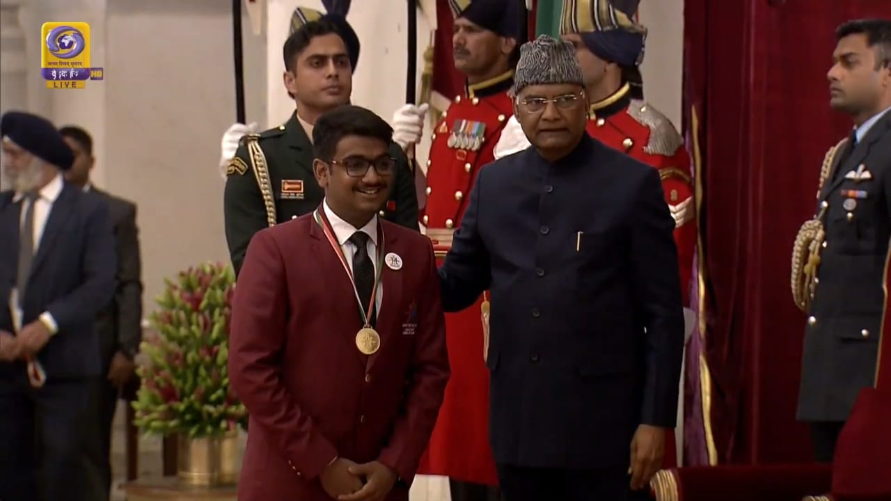

Recently me (a.k.a Anmol) and my project partner Harsh were awarded the Pradhan Mantri Bal Shakti Puraskar 2020 in the field of innovation for our project on ‘Early Detection of Pancreatic Cancer’
This year it was conferred to 49 children between the age group of 5-18 years under various categories including bravery, social service, sports, art and culture, innovation and scholastic. A cash award of 1 Lakh, a tablet, and a medal was presented to each awardee.
It was a six-day event from 21st January to 26th January 2020. It was a hell-of-a-blast! And I know I’m nearly 10 days late for writing this blog but its not my fault (actually, it is) - high resolution weren’t uploaded yet! (What a lame excuse Harsh…). Anyways, I finally decided to pour out my heart (metaphorically!). So here it begins!
We all gathered at the Hotel Ashok, the place of stay, on 21st. The hotel was awesome but more flabbergasting was the vibe as I would be spending a week with 49 amazing people. We checked in, rested for somewhile and then reported for briefing and collecting our tailored blazers (It looked awesome on me😎). Anyways, in the evening, I met some awesome people.
(p.s - I’m going to nickname them so that I don’t forget. JUST BARE WITH ME😅) I met The Soccer Dude (a.k.a Arjun Pandey), The Einstien Visa Girl (a.k.a Harshita Arora): A super-awesome dude(‘ess) working in the Silicon Valley!, The Haryanvi Dude (a.k.a Paritosh Dahiya): We had already met at IRIS 2017!, The Planet Dude (a.k.a Richard Joseph) A super-awesome guy (More stuff coming about him soon!) & Arunima Sen (No Nickname could describe her I suppose!): Cool Fact though - She and I are two of the three Indian Global Teen Leaders selected this year!
But when we all went for dinner, I met two more amazing people! And I knew both of them from IRIS 2017: ‘The Let Me Explain Guy’ (a.k.a Sagnik Anupam) who was this year’s awardee! and ‘The Salesman’ (a.k.a) Muhammad Suhail. So both were Grand Award winners of ISEF and I and Anmol (my project parter) had to go to Delhi the next day for participating in IRIS - the qualifier for ISEF. These guys just transformed our brains with their suggestions!
It was Day 2 and this was the day when we would be getting the ‘AWARD’ from the President of India at The Rashtrapati Bhavan. While reaching Rashtrapati Bhavan, I had also met with another prodigious Awardee from the IRIS-ISEF Family - ‘I’m in the verge of becoming Dracula Girl’ (a.k.a Sunitha Prabhu). When we first reached Rashtrapati Bhavan, we were first given a tour of the Rashtrapati Bhavan and then we were introduced to everyone else and with the Awardees of last year where I finally … finally found a person who I saw with my eyes get into Harvard. I mean seriously I had come to believing that it was just impossible.
On 23rd, we were taken to the Rajpath for the Republic Day parade rehearsals. In the afternoon and the extended evening, We were called up to meet and interact with the Minister of Women & Child Development – Smiti Irani – followed by a press conference where all the awardees were asked to share our success stories and the difficulties We faced in our journey.
24th was a rather prestigious day as we were presented with the opportunity to meet with Honorable Prime Minister – Shri Narendra Modi. All the awardees were fortunate enough to obtain a personal photograph along with a combined group picture. Then, our Prime Minister had an interactive session with us that followed up to the lunch. In the evening we were to be summoned for the Doordashan’s interview followed by Rajya Sabha TV’s interview
On 25th, all awardees were taken out for Delhi Darshan; in the evening, we were called for Republic Day’s parade instructions. On the 26th of January, Republic Day, we all were summoned on open jeeps at the Rajpath early morning. We were presented with the prestigious opportunity to be a part of the parade till the India Gate. After the parade, all the awardees along with the escorts were called for the closing ceremony. The ceremony was lit up by the gracious words of few intellectual dignatories and filled with joy by the tremendous performances by some of the awardees. The event ended on 26th with a final group photograph along with a dispersal goodbye and best wishes for the future!